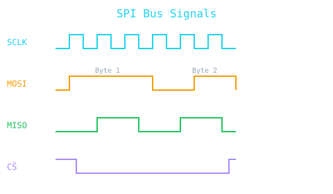

| Signal | Direction | Description |
|---|---|---|
| SCLK | Master → Slave | Serial clock — generated by master |
| MOSI | Master → Slave | Master Out Slave In — master transmits |
| MISO | Slave → Master | Master In Slave Out — slave transmits |
| CS/SS | Master → Slave | Chip Select — active low, one per slave |
| Type | Synchronous serial, full-duplex |
| Wire count | 4 (+ 1 CS per extra slave) |
| Speed | Up to 100+ MHz (hardware-dependent) |
| Topology | Single master, multiple slaves |
| Addressing | Via CS line (not address bytes) |
| Pull-up needed? | No (push-pull outputs) |
| Distance | Short (<1m typically) |
| Daisy-chain | Supported (MOSI→MISO chain) |
| Feature | SPI | I²C | UART |
|---|---|---|---|
| Wires | 4+ | 2 | 2 |
| Speed | High (MHz) | 100k–3.4M baud | Up to ~15M baud |
| Full-duplex | Yes | No (half) | Yes |
| Max slaves | Many (CS per slave) | 127 (7-bit addr) | 2 (point-to-point) |
| Clock | Sync (master clock) | Sync (master clock) | Async (baud rate) |
| Protocol | Minimal/custom | Built-in address | Start/stop bits |
| Best for | Flash, ADC, DAC, displays | Sensors, EEPROMs | Modules, GPS, BT |
| Mode | CPOL | CPHA | Clock idle | Data captured | Common devices |
|---|---|---|---|---|---|
| Mode 0 | 0 | 0 | Low | Rising edge | Most ADCs, SD cards, many sensors |
| Mode 1 | 0 | 1 | Low | Falling edge | MAX31855, some accelerometers |
| Mode 2 | 1 | 0 | High | Falling edge | Some shift registers |
| Mode 3 | 1 | 1 | High | Rising edge | Some display controllers |
#include <SPI.h> const int CS_PIN = 10; void setup() { SPI.begin(); pinMode(CS_PIN, OUTPUT); digitalWrite(CS_PIN, HIGH); // deselect // Optional: configure speed, mode, bit order SPI.beginTransaction(SPISettings(1000000, MSBFIRST, SPI_MODE0)); } void loop() { digitalWrite(CS_PIN, LOW); // select slave byte received = SPI.transfer(0xA5); // send & receive digitalWrite(CS_PIN, HIGH); // deselect delay(100); }
byte readRegister(byte reg) { digitalWrite(CS_PIN, LOW); SPI.transfer(reg | 0x80); // read bit = 0x80 byte val = SPI.transfer(0x00); // dummy byte digitalWrite(CS_PIN, HIGH); return val; } void writeRegister(byte reg, byte data) { digitalWrite(CS_PIN, LOW); SPI.transfer(reg & 0x7F); // write bit = 0 SPI.transfer(data); digitalWrite(CS_PIN, HIGH); }
| Board | MOSI | MISO | SCK | SS (default) |
|---|---|---|---|---|
| Arduino Uno/Nano | D11 | D12 | D13 | D10 |
| Arduino Mega | D51 | D50 | D52 | D53 |
| ESP8266 | GPIO13 (D7) | GPIO12 (D6) | GPIO14 (D5) | GPIO15 (D8) |
| ESP32 | GPIO23 | GPIO19 | GPIO18 | GPIO5 |
| Raspberry Pi | GPIO10 (SPI0) | GPIO9 (SPI0) | GPIO11 (SPI0) | GPIO8/7 |
| Device | Type | Mode | Max Speed | Notes |
|---|---|---|---|---|
| SD card | Storage | 0 | 25 MHz | Use SdFat library |
| W25Q32 Flash | SPI Flash | 0 | 80 MHz | 32 Mbit NOR flash |
| MCP3008 | 8-ch ADC | 0/1/2/3 | 1.35 MHz | 10-bit, 8-channel |
| MCP4921 | DAC | 0/1 | 20 MHz | 12-bit, single ch |
| MAX31855 | Thermocouple | 1 | 5 MHz | Cold-junction compensated |
| nRF24L01+ | RF transceiver | 0 | 10 MHz | 2.4 GHz, 250k–2Mbps |
| ST7789 / ILI9341 | TFT display | 0 | 80 MHz | Color LCD driver |
| SX1276 | LoRa radio | 0 | 10 MHz | Long-range 868/915 MHz |
| MPU-9250 | IMU | 0/3 | 20 MHz | 9-axis accel/gyro/mag |